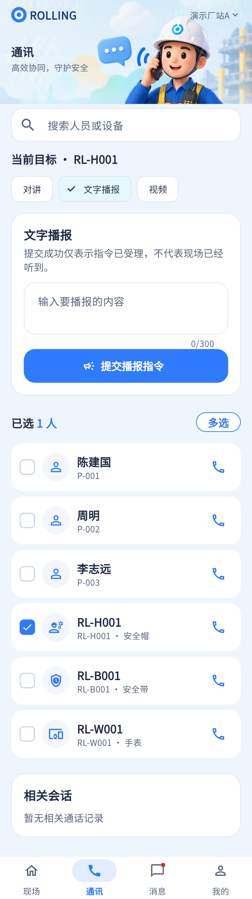

单设备TTS提交已接代码；最近提交时间、回执过程和最终结果未完整呈现。
相同 · 已有基础
文字输入、字数限制、目标选择、提交、防重按与“受理不等于听到”提示已有。
不同 · UI与场景
当前是通讯页内文字播报卡，目标只有SN文本，缺设计独立目标图卡及指令状态卡。
01 / 先看 UI
两图显示宽度统一；设计390px与当前360逻辑宽的画布不同。各图可独立滚动到底，点击“原图”放大。


使用既有组件截图；业务数据为示例。
02 / 逐项核对功能与小交互
入口：通讯 → 语音播报 → 选择装备 · 当前形态：功能区
| 编号 | 部位 | 设计要求 | 当前UI | 功能结论 | 下一步 |
|---|---|---|---|---|---|
| 20-01 | 目标 | 头像/设备图、名称、SN、在线态，可更换 | 当前通过通讯目标切换，表单上方只有目标SN | 部分：目标数据/能力已有，独立摘要卡缺 | 补可读目标确认，避免发给上一次设备 |
| 20-02 | 输入 | 多行文字与字数计数 | 当前2至4行，0/300 | 已有代码：maxLength300、trim及非空验证 | 设计未规定上限，不应擅改500；标明300规则 |
| 20-03 | 提交 | 提交播报指令 | 当前已有 | 已有代码：POST commands/tts，idempotencyKey与busy | 保留重复点击保护和错误反馈 |
| 20-04 | 能力 | 只对TTS设备可操作 | 当前policy判断权限和capability | 已有代码 | 无能力/无权限显示具体原因 |
| 20-05 | 受理语义 | 受理不等于播放成功 | 当前明确提示 | 已有代码 | 保持，不能出现无回执的“已播放” |
| 20-06 | 最近提交 | 时间与目标 | 当前无单独卡 | 缺失：最近提交时间/指令ID展示 | 保存本次真实返回元数据 |
| 20-07 | 执行状态 | 等待设备回执及最终状态 | 当前只综合初始failed与“已提交” | 部分：没有持续获取指令回执的完整UI | 接回执查询/推送，区分受理、执行、失败、超时 |
| 20-08 | 多目标 | 图只展示单个目标 | 当前sendTts只传selectedDevice一个ID | 已有单目标代码；不能把联系人多选解释为批量播报 | 批量属于后续扩展，先保障单设备闭环 |
源码依据
communications/communications_page.dart:936；communications/controller.dart:484；communications/api_gateway.dart:67
链接为随报告保存的带行号快照；行号对应分析时源码。以函数和字段共同定位，不能将请求代码视为执行成功证据。